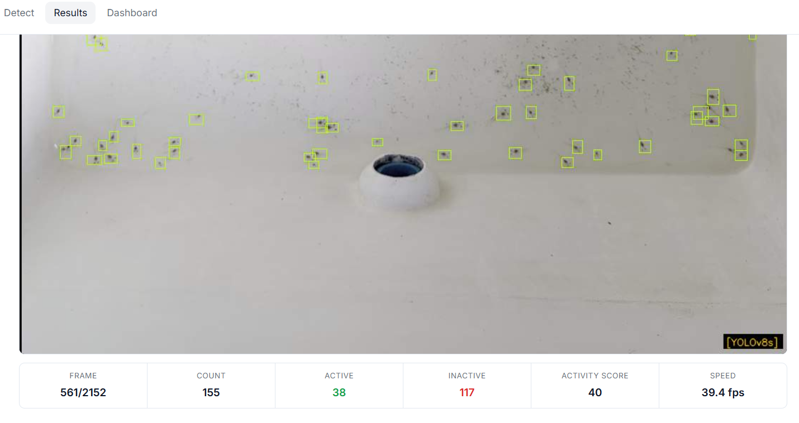
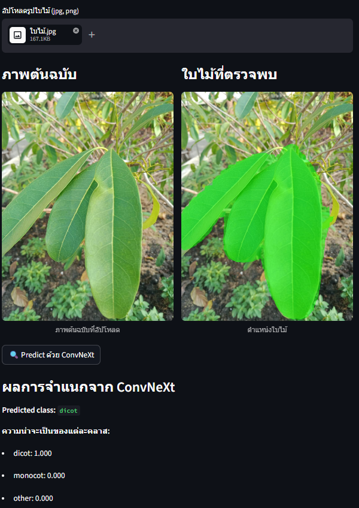
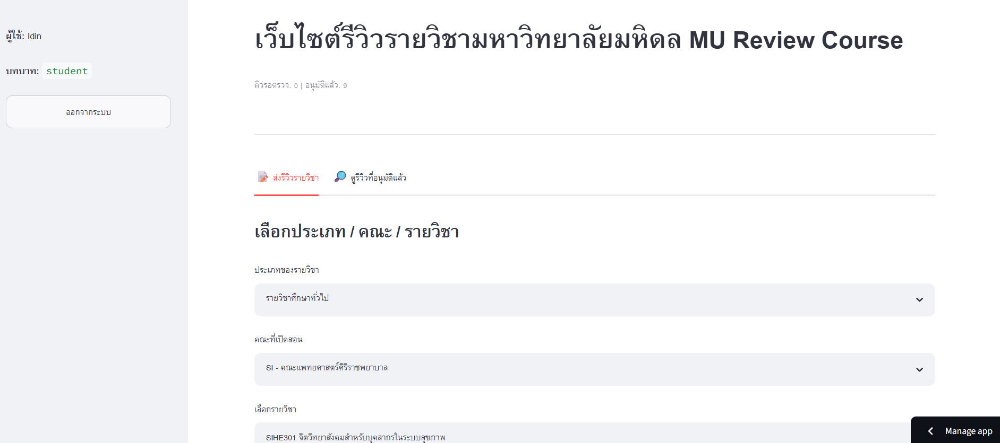
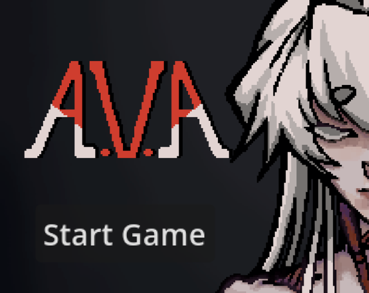
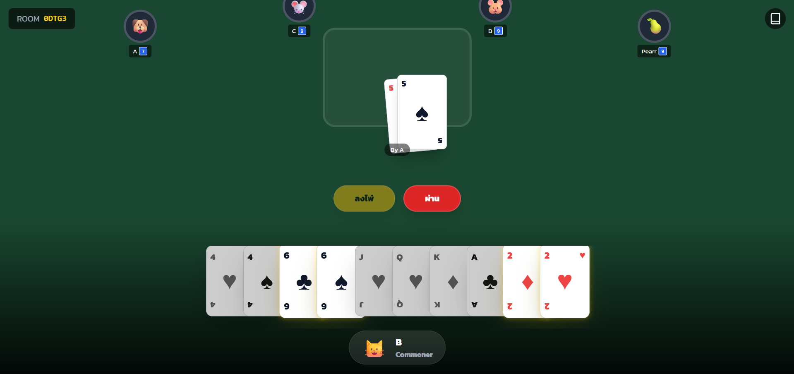

About
I am Anucha Saelee, a Mathematics graduate from Mahidol University with hands-on
project experience in computer vision, machine learning, Streamlit/Flask web
applications, and deployment-ready AI tools.
My strongest work is building practical systems around models: data preprocessing,
model evaluation, inference workflows, dashboards, and simple interfaces that people
can actually use.
Skills
Programming Languages: Python, SQL
ML Ops/DevOps: GitHub Actions, Docker, MLflow, FastAPI
Machine Learning: TensorFlow, Keras, PyTorch, Scikit-learn (SVM, Random Forest, Ensemble, PCA), Linear Regression, Naive Bayes, k-NN, Decision Trees, YOLO, CLIPSeg, ViT, Q-Learning
Other: Streamlit, HTML, CSS, AI-assisted development with Codex and Claude
Education
Mahidol University
Bachelor of Science, Major in Mathematics
Projects
ShrimpVision
Senior project - Deep learning web application for shrimp post-larvae
detection, counting, model comparison, and preliminary video activity analysis.

- Built a Flask-based web application for image and video inference workflows.
- Trained and evaluated YOLOv5s, YOLOv8s, and YOLOv10s.
- Measured precision, recall, F1-score, mAP50, mAP50-95, MAE, RMSE, within-10 rate, and FPS.
- Best reported result: YOLOv5s at confidence 0.25 with MAE 14.13, RMSE 24.31, 63.33% within-10 rate, and 93.11 FPS.
Tech: Python, Flask, YOLO, computer vision, Render
Repository |
Live demo
Leaf Classification Web Service
Streamlit-based computer vision web service for leaf detection,
preprocessing, and venation classification.

- Built an end-to-end app using Streamlit, PyTorch, and computer vision models.
- Integrated CLIPSeg-based leaf region detection and cropping.
- Extracted ViT/DINOv2 image features and trained SVM, RandomForest, ConvNeXt1D, PCA, and ensemble classifiers.
- Evaluated models using accuracy, macro-F1, classification reports, confusion matrices, and inference timing.
Tech: Python, Streamlit, PyTorch, ViT, Scikit-learn
Repository |
Live demo
MU Course Review Web Service
Streamlit course review platform for Mahidol University students.

- Built student sign-up, login, email verification, password reset, and review submission flows.
- Integrated Google Sheets as a course catalog and optional review database using gspread.
- Implemented pending approval workflow, admin moderation, filtering, sorting, and CSV/JSON export.
Tech: Python, Streamlit, Google Sheets, gspread
Repository |
Live demo
A.V.A - Thailand Summer Jam 2026
Godot-based 2D action roguelite submitted to Thailand Summer Jam 2026.

- Developed exploration areas, combat rooms, NPC interactions, dialogue sequences, and cutscenes.
- Implemented player movement, health, knockback, camera shake, auto-target combat, projectiles, enemies, elites, and multi-phase bosses.
- Built run-based systems including waves, coins, shop upgrades, perks, relics, rewards, stat calculation, and save/load management.
- Ranked #53 in Creativity and #54 in Aesthetics out of 133 submissions, with overall rank #68.
Tech: Godot, GDScript
Play on itch.io |
Repository
Slave Online Card Game
Real-time multiplayer web-based card game built with React, Firebase
Firestore, and Tailwind CSS.

- Built room creation, private room codes, and Firebase Firestore synchronization.
- Implemented turn validation, card ranking, pass system, King Down, reverse flow, and auto-exchange rules.
- Designed responsive UI with playable-card hints, auto-select helpers, player roles, avatars, and round summaries.
Tech: React, Firebase, Tailwind CSS
Repository